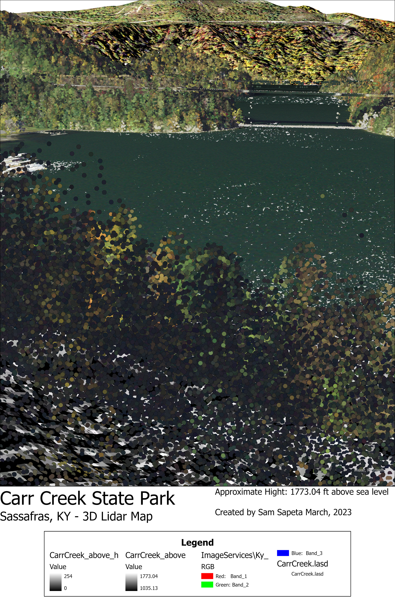

An interactive map of the Carr Creek state park
Carr Creek was established by early pioneers in the 1770s, as its natural beuty and access to clean water at the time brought lots of attention. The marshland found in this location is rare for this region of Kentucky, and it goes relativley undesturbed besides nearby coal mines to the north and south.
The goal of this project is to provide some background knowledge on the state park, as well as provide personal opinions that might encourage future visits from people traveling in and out of eastern KY. Furthermore, it allows for a 3D visualization that is mostly accurate to topography, so it could be used as a great reference for hydrologists and wildlife enthusiests to see the associated vegitation and scale of the creek.
Visualizations created from lidar data provided by KyFromAbove in ArcGIS Pro and Blender, April, 2023.
Page and visualizations created by Samuel Sapeta for GEO 409, Natural Resources and Environmental Sciences, University of Kentucky. Spring 2023.
In 2001, the area shown on this map was still predominatly forested, with lush greenery and natural resources all around Carr Creek. Interestingly, the areas to the north and south of the state park show many signs of surface mine expansion, resulting in an increase in barren fields, due to poor restoration practices.
This was an early visualization for the state park done in ArcGIS, the map layout uses point cloud information and NAIP imagry from the Kentucky geodatabase available to students. The imagry is a Phase 2 point cloud, taken between 2017 and 2019.